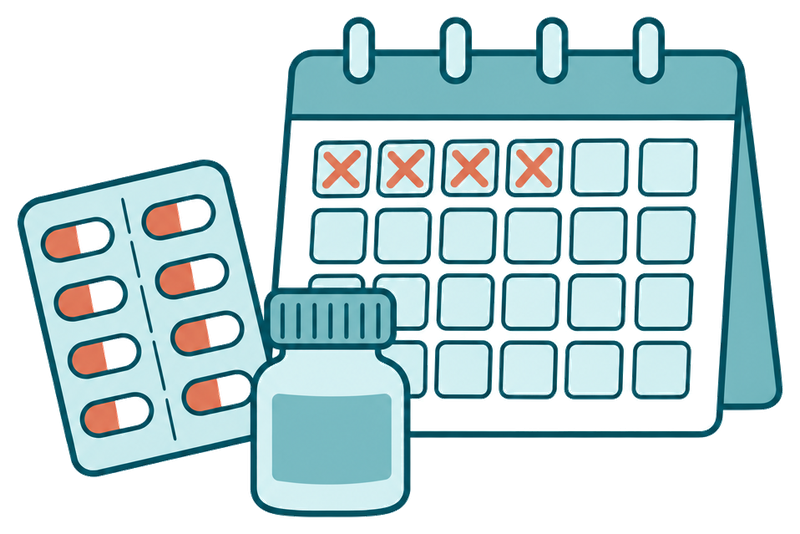
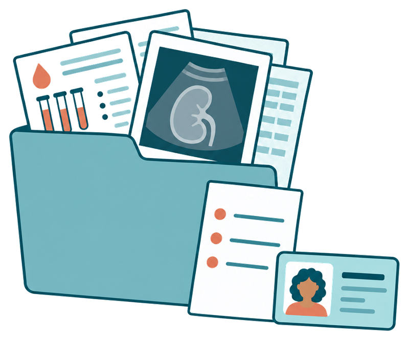
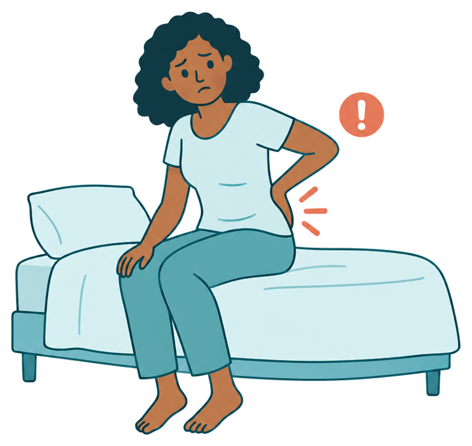

O que fazer antes e depois do exame
Se você usa algum remédio da lista abaixo, converse antes com o médico que receitou. Quem tem stent no coração, válvula cardíaca, arritmia ou já teve trombose pode precisar de um plano especial.

Os outros remédios continuam normalmente, inclusive os de pressão, também no dia da biópsia, salvo outra orientação da equipe. Pressão alta no dia pode adiar o exame.


Evite esforço físico e carregar peso pelo tempo que a equipe orientar.